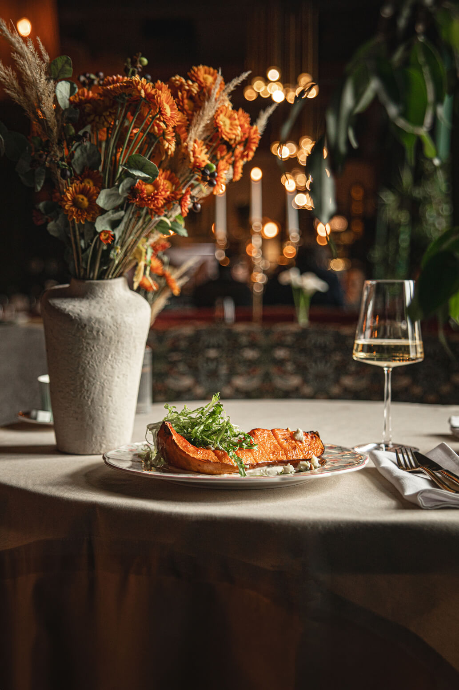

Discover
Browse hundreds of carefully curated restaurants across cuisines, price ranges, and dining styles — from quick bites to unforgettable fine dining.
Melbourne & Beyond
Discover hand-picked restaurants, get personalised dining recommendations, and reserve your table — all in one place.

Why TasteFind
Browse hundreds of carefully curated restaurants across cuisines, price ranges, and dining styles — from quick bites to unforgettable fine dining.
Tell us your dietary needs, budget, and occasion. Our smart recommender matches you to the restaurants that truly fit.
Lock in your table with a simple deposit — no phone calls, no waiting. Flexible booking for groups of any size.
How It Works
TasteFind removes the friction from dining out. Whether you know exactly where you want to go or need a little inspiration, we get you there.
Book Your TableExplore our curated directory filtered by cuisine, location, or price range.
Answer a few quick questions and receive tailored restaurant suggestions.
Reserve your spot with a simple deposit — online or with a voucher.
Arrive, relax, and savour an experience chosen just for you.
Who It's For
Kid-friendly menus, spacious venues, and early-evening availability — find places the whole family will love.
Romantic ambience, intimate settings, and the perfect menu for a special evening or anniversary dinner.
Impress clients with the ideal business lunch or corporate dinner, with private dining options available.
Discover the city's authentic flavours — from local hidden gems to award-winning dining destinations.
Editor's Picks
 Cantonese
Cantonese
Melbourne's most beloved Cantonese institution, Flower Drum has graced Market Lane since 1975. Behind its discreet entrance lies an elegant dining room where immaculate service and time-honoured technique reign supreme. The legendary Peking duck is carved tableside, steamed dumplings arrive translucent and silken, and the attention to detail on every plate is nothing short of extraordinary. A true Melbourne icon.
Reserve Contemporary Australian
Editor's Choice
Contemporary Australian
Editor's Choice
Consistently ranked among the world's 50 best restaurants, Attica is Ben Shewry's extraordinary tribute to Australia's native landscape. Each dish draws on foraged ingredients, indigenous botanicals, and seasonal produce to craft a tasting menu that is as much cultural experience as meal. Located in the quiet suburb of Ripponlea, it requires patience to book but rewards with a dinner unlike any other in the world.
Reserve Italian
Italian
Named after the finely milled flour at the heart of great pasta, Tipo 00 has redefined Italian dining in Melbourne. Chef Andreas Papadakis crafts housemade pasta with quiet precision, from the signature paccheri braised in rich oxtail to butter-bathed tortellini that melt on the tongue. Intimate, warm, and perpetually booked, it is a pilgrimage destination for pasta lovers across the city.
ReserveDon't Wait
Join over 4,200 diners who've discovered their next favourite restaurant through TasteFind. It's free, fast, and genuinely personal.